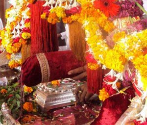
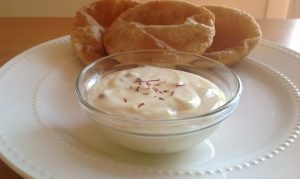
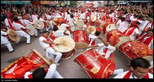

Pune exemplifies an indigenous Marathi culture and ethos, in which education, arts and crafts, and theatres are given due prominence. It is the birthplace of the poet-saint Tukaram (in Dehu) and Jnaneshvara (in Alandi), the author of the well-known commentary ‘Jnaneshwari’,on the “Bhagavad Gita”. It is the home of great freedom fighters like Bal Gangadhar Tilak, Agarkar and Gopal Krishna Gokhale. Jayant Narlikar, the famous contemporary scientist, is from Pune. Pune is the seat of North Indian Classical music. Annually, in the month of December, it hosts a three nightlong cultural program of vocal and instrumental classical music, called “Savai-Gandharva”.Pune has been an example for the blending of the culture and heritage with modernisation and its side effects. Pune is the cultural capital of the Maharashtra..
Pune, the seat of the Peshwas has retained its traditional cuisine and a special Pune meal would consist of Puran Poli (a sweet paratha with pulses/dal) Amti (masala dal), Pithla Bhakri (a masala chickpea gravy with a stiff ‘roti’), Varan Bhat (dal and rice), Matki Ki Usal (masala sprouts), Thali pith (a spicy chickpea based pancake) and Alu chi Vadi (steamed and fried, sweet n’ spicy leaves). Bakar Vadi (spicy crusty savoury) and Missal Pav (spicy mixture of onions, chilly and small savoury items, with bread) are some of the most delectable snacks. For those with a sweet tooth, Pune offers its Shrikhand (a burnt milk delicacy) and the seasonal Amras Puri (thick mango juice with fried ‘puris’) complete the traditional Maharashtrian feast.
All the Indian festivals like Diwali, Janmashtami, Navaratri, Dashahara, Holi, Rakshabandhan, Christmas, Id etc are celebrated with the same excitement in Pune with no religion, language bars. But Pune is famous for its Ganesh festival.
